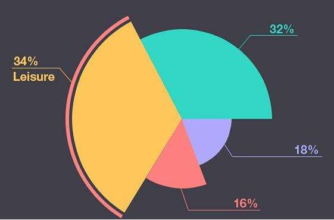
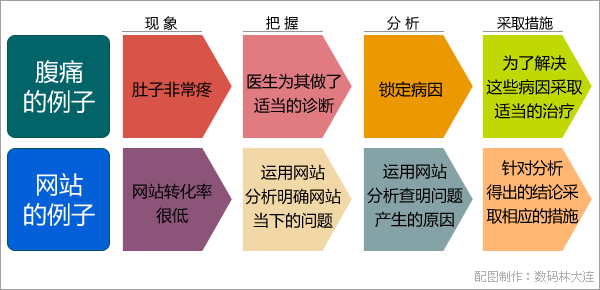

如何找竞争对手：百度，跟你网站相关的关键词，能搜到的就是。到分类网站上面找（这上面的主，大多是砸钱砸上去的，出现在里面的网站或说明其有钱，或说明其已形成品牌）。
为什么要进行分析：了解对手的各个方面，咱们取精华去糟粕；利于，网站最终服务内容的确定。
分析哪些网站：与我们有牵扯的网站，大大小小，形形色色。我们要借鉴大网站的成功运营模式，了解小网站的特色服务。
需要秉持的原则：首先，剔除个人喜好，客观对待。当然，如果是你自己的项目，你可以保留部分无害的内容，毕竟自己喜欢，才有心经营下去；其次，从用户体验及创利角度思考每一个栏目的设置；最后，经过一轮分析，你还是能够坚定的做这个项目，那么恭喜，你已经通过自己这一关了（如果，分析后，你放弃了它，请把这个项目归档，没准哪天，你会有新的发现）。
网站分析的角度有：“网站菜单与导航”、“网站产品与服务”、“网站设计”、 “网站运营”、“网站技术”、“市场推广”、“公司情况”及“赢利模式”。

下面详述：
①网站菜单与导航：通过对菜单及导航的研究，我们能了解网站的结构，服务的核心等。把握住，站长建立该站的目的是什么。
·一级菜单及颜色突出的菜单文字，为站长强调的功能，即，网站的核心服务。
·核心服务的把握，利于我们对自己网站服务的确定。
·对方的菜单栏及导航设置，也能成为我们以后自己站点的一个借鉴。
②网站产品与服务：互联网作为一个载体，其存在的最大价值在于为人们的生活提供便捷。而产品与服务，则是各类网站之间的核心竞争。
·网站基础功能比对。通过对相关站点的菜单导航的研究，我们已经能初步概括出各站点的基本服务。此时，我们需要横向作对比，比较各网站间的服务差异化。差异化的存在，即是站长对产品及目标群体的不同把握所致，通过比对，我们应该能大致了解哪一块的服务是基本需求，哪一块的服务能吸引用户，哪一块的服务尚未受到重视。
·产品本身的细分—网站元素。在我们进入一个网站的内页时，其网页元素的摆放次序、色彩大小的使用，就能比对出单个网站其所强调的要素。在一些基本功能相同的情况，如若一个站点获得更多的用户，栏目的设置摆放也起着决定性作用。（网站强调的内容，基本上就是我们第一眼印入眼帘的内容。）
·产品本身的细分—功能流程。网站的功能实现，会涉及到用户的操作，操作流程的步骤、复杂度都会影响用户体验。
如，用户注册这一功能，我们要本着两个原则。
第一，在非必须的情况下，剔除注册这一步骤（如，导航类站点，用户的注册对用户本身的服务没有任何提升，如若此时加入这一项，等于赶走用户）；
第二，简化及分段注册，在无线领域中较为常用的用户注册方式—一键注册（用户单击注册，无需填写信息，即可获得一个初始密码，账户为其手机号；在以后的业务中，涉及到具体到一些个人信息，再提示用户完善注册信息），在互联网领域自然不能简化到这种地步，比较常见的注册方式，即用户填写账户密码个人信息→邮箱确认→完成注册，我们要根据自己的产品需求，做一些流程上的调整，如，邮箱验证放到用户执行“忘记密码”；个人信息填写放到具体的业务功能中，作为一个执行功能的必要条件，引导其填写。一些网站，本身不能提供用户填写大堆个人信息的理由，但又考虑到一些用户信息可能会利于网站对用户行为的分析及以后业务的扩展，我们可以将一些基础信息安排在“注册成功”前一步，由用户自己选择是否要填（如，填写你的出生日期作为密码重置的验证信息）。

③网站设计：网站设计主要体现在页面风格，与网站的内部结构上。在他人网站上，体验他们每个页面的风格与结构，从自己的角度整理出一个相关的需求列表，吸取他们的产品优点，提出为什么他们会这么设计。此时，你大概能整理出自己网站需求的细节，可能你已经在纸上草草的画出了自己网站DEMO，留着，以后会有用处。这是形象化自己站点的一步。
·页面风格强调两点，与内容的匹配、简洁。
·网站的内部结构，在搭建网站的页面结构时，我们需要从用户的角度体验这个产品。做到，用户想到什么，这个页面上全部都有。如，用户在看一个视频的同时，可能希望能继续看这个视频相关的其他视频，可能他想有一个这个连续剧的播放列表，可能他希望知道别人会看什么，可能他希望网站能自动保存他的播放继续（即使他没登录，注册），等等。而，我们需要做的就是将这些相关元素都安排在页面上，这里面会有一些取舍，我们不一定能满足每个用户的需求，但要满足大多数。
④网站运营：网站整体的运营情况，我们可以从日均IP、PV查看（ALEXA网站查询），网站的PR值，用户之间的互动反映出来。运营优秀的网站，能给网友营造出氛围，这源于网站规则的制定，网站内容的优越性等。从运营状况的了解，我们能取长补短，给自己的网站立一个标杆。
·日均IP，访问的用户量决定了网站最终的收益大小。通过对几个竞争网站的日均IP量研究，我们能在那些IP稳定在一段区间里的网站，大致衡量出我们自己网站将来一段时间内可能的用户数，及运营的目标。
·日均PV，这个指数对一些新闻内容、论坛等具备丰富内容，互动的网站是一个用户活跃度的借鉴。对于，导航类网站，PV意义不大。
·人均页面停留时间，在视频类网站中，是一个不可或缺的指标。能衡量出，网站内容的质量。
·用户互动，大多数站点都不可或缺用户点评及留言类互动板块。用户间的互动，能增加网站不少访问量。对于SNS，论坛这些以用户为主题的网站，用户间的互动对于站点具有决定性作用。我们通过对用户评论的观察，能发现哪些话题是能引起用户兴趣的，哪些是网站自己套马甲，能发现该类网站聚集的用户的兴趣爱好。这，将利于我们网站今后挖掘话题。
⑤网站技术，我们需要知道对方的网站是基于CMS改建（大多用模板的站点，在其网站末尾都有一个POWERED BY），还是自建。如若对方是改建，我们的程序也就能基于这个平台，节省开发时间。此外，我们需要与技术人员一起研究，网站一些功能的实现，采用的是什么技术。（如，了解网站的信息是API接口时间，还是手工录入，这会涉及网站的开发，与将来商务合作的工作重点）
⑥市场推广，网站推广基于SEO与营销推广活动两块。我们需要逐一进行分析，SEO中的关键词、友链，营销的平台手法。用以借鉴。
·关键词的使用，查看源代码中的“TITLE”和“META中的KEYWORDS、DESCRIPTION”，我们能知道该站点使用的关键词。
·友情链接的交换，我们可以到站长工具中查看友情链接的交换网站。他们将会是我们以后主要交换链接，或者软文的地点。
·营销的平台，网站做营销的平台，常见的有BLOG、论坛、SNS、新闻站点四类。我们需要做的，就是将这个网站的名字进行搜索。对方发布的站点，我们进行一定的分析后，选择性的发布自己的软文。
·推广营销的手法很多样，我们很难一次猜透对方的营销手法。但，我们能从两个侧面了解。第一，到对方网站上查看是否有类似SNS、微博、RSS等提示其在其它网站上有注册的信息；第二，搜索该网站的名字，查看它都出现在什么地方。了解到，对方在哪些地方出现，并且我们上去查看了相关内容，就能知道对方大致使用的推广手法（软文，硬广，友链等）。
⑦公司情况，对于需要写商业计划书的朋友，自然是少不了这块内容。不过，除长期受媒体关注的，上市类大型互联网公司，其它的网站的实际状况大家很难亏得。我们只能从网站方的招聘信息，与其自身的简介，网站上广告的类型，大致了解公司的规模，公司所处的阶段。
·个性小站站长，这块基本忽略。
⑧盈利模式，网站的盈利模式多种多样。在网站的盈利模式中，我们已经进行了长篇的介绍，这里就不浪费空间啦。我们需要看的是，对方的网站上是否出现我们提到的盈利模式中的一丁点迹象，揣测其的赢利点。一般性，网站的赢利点还是很容易看出来的。
·这里，我们要注意一下，对方的广告主大多是什么类型，这些广告主以后也是我们主要服务的对象。
来源：http://www.116net.cn/news/problem/128.html
文章关键词：网站分析方法 网站分析事项